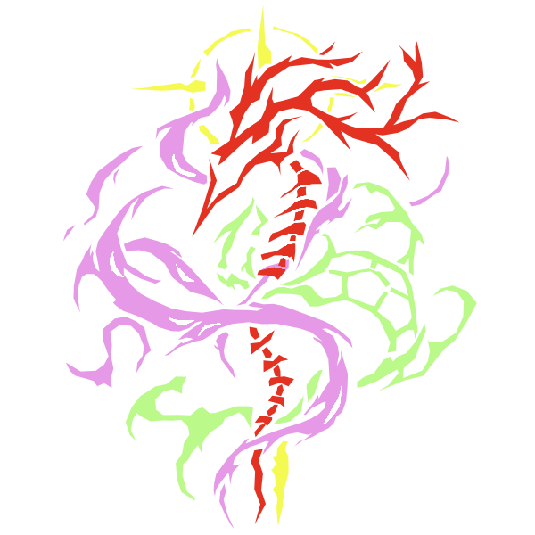
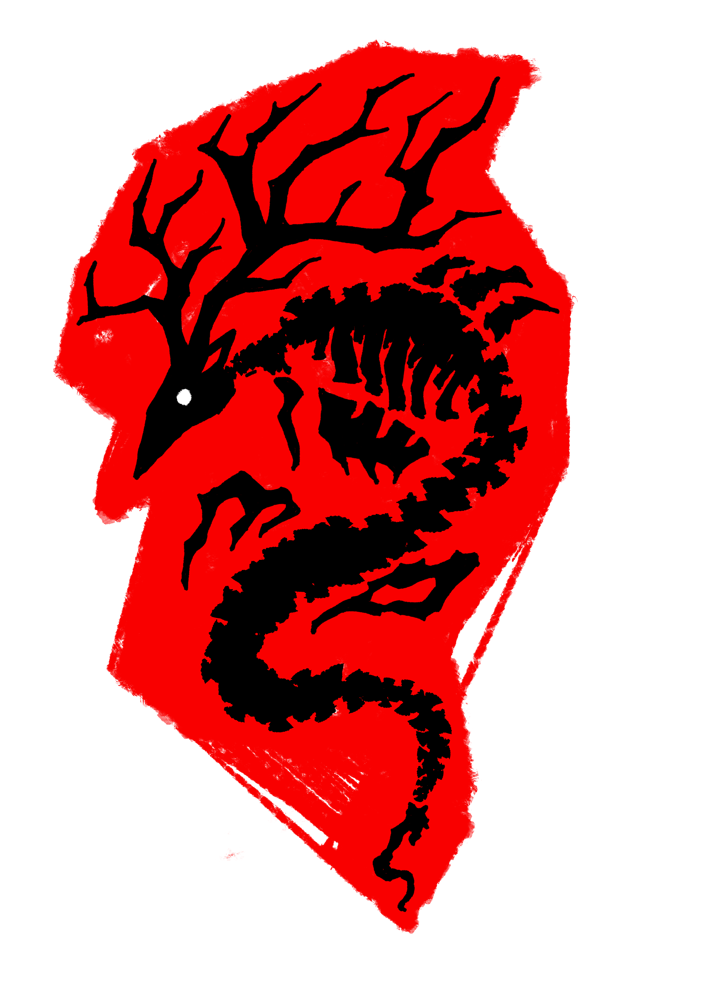
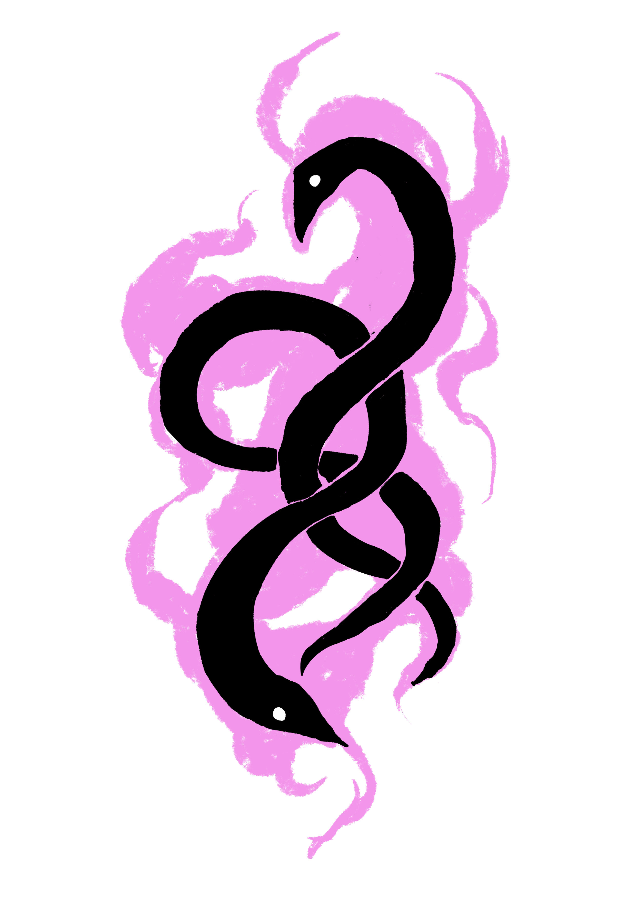

神秘寄生生物「紋獣」
在这个世界中，游荡着被称为「紋獣」的神秘寄生生物。它们被人类强烈的情感、欲望与执念所吸引，无法脱离宿主独立存在。紋獣并不会凭空创造宿主原本不存在的性格，而是如同一面放大镜——将宿主原本的思考习惯、依赖心或独占欲不断放大，并随着情感的积累持续成长。
※ 寄生定律：执念愈深，兽影愈浓。

images/monju_hero.png
MONJŪ PALMISTRY ARCHIVE
掌纹并非命运的预告，而是潜伏于体内的神秘寄生生物「紋獣」留下的爪痕。
在这个世界中，游荡着被称为「紋獣」的神秘寄生生物。它们被人类强烈的情感、欲望与执念所吸引，无法脱离宿主独立存在。紋獣并不会凭空创造宿主原本不存在的性格，而是如同一面放大镜——将宿主原本的思考习惯、依赖心或独占欲不断放大，并随着情感的积累持续成长。
当紋獣寄生于人体时，其能量流动会在宿主掌心刻下无法抹去的爪痕。世人常说的三大掌纹，实则是不同属性紋獣活动的证明：
・生命线：代表生命、生存本能与野蛮成长；
・感情线：记录人与人之间的连接、深层依赖与独占；
・智能线：映射宿主的观察、思考与精神解析。
世间存在十二种截然不同的人格个体，各自与特定的紋獣产生共鸣。面对寄生，宿主将走向两种截然相反的宿命：
・「转化」：极少数意志如铁者，能克服精神侵蚀，将紋獣化为自身驾驭的力量（如双生命线便是转化之证）；
・「支配」：多数人会在膨胀的情感与欲望中迷失自我，最终被紋獣彻底吞噬并支配。

images/beast_life.png
象征着生命、生存与成长。以人类对生命的渴望与生存本能为食，其形态与象征气血流动的「鹿血」紧密相连。寄生后会不断强化宿主的求生欲与突破极限的本能，若欲望过度膨胀，便会演变为对生存永无止境的偏执渴求。
images/beast_wisdom.png
象征着观察、思考与分析。被人类对知识、真相与未知的强烈渴望所吸引，以古代占卜刻辞的龟甲与甲骨纹为原型。寄生后会强化宿主的洞察与推理能力，但当求知欲失控膨胀时，思考将沦为无休止的过度分析与偏执追寻。

images/beast_heart.png
象征着人与人之间的连接、依赖与独占。以无法脱离宿主独立生存的「寄生虫」为原型，代表难以割舍的情感束缚。寄生后会放大宿主对陪伴与联结的渴求，随着依赖加深，最终可能扭曲为极端的占有欲与独占执念。
现在，请摊开你的惯用手掌。作为「观测者」，你将通过 15 项掌纹特征比对（约 30 秒），追踪潜伏于体内的紋獣属性，并揭晓与之共鸣的人格档案。
images/q1.png
images/persona_01_normal.png
“好奇、主动、开放”
---
---
---
---
---
---